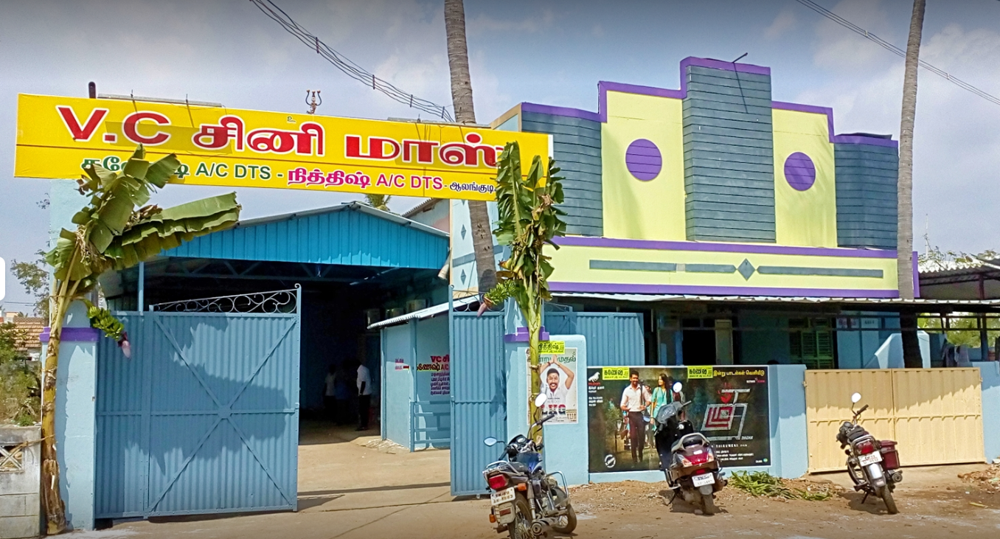

ALANGUDI
VC cinemas

In this Theatre is a collaborative art form which combines words, voice, movement and visual elements to express meaning.
Rows of seats are divided by one or more aisles so that there are seldom more than 20 seats in a row.
This allows easier access to seating, as the space between rows is very narrow.
During the first decade of motion pictures.
The demand for movies, the amount of new productions.
The average runtime of movies, kept increasing.
It was viable to have theaters that would no longer program live acts, but only movies.